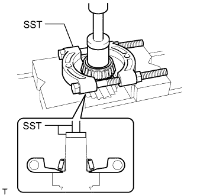

ВЫХОДНОЙ ВАЛ > РАЗБОРКА |
| 1. REMOVE NO. 3 SYNCHRONIZER RING |
Remove the No. 3 synchronizer ring from the output shaft.
| 2. REMOVE OUTPUT SHAFT CENTER BEARING |
Remove the output shaft center bearing from the output shaft.
| 3. REMOVE OUTPUT SHAFT REAR BEARING |
|  |
Using SST and a press, remove the output shaft rear bearing from the output shaft.